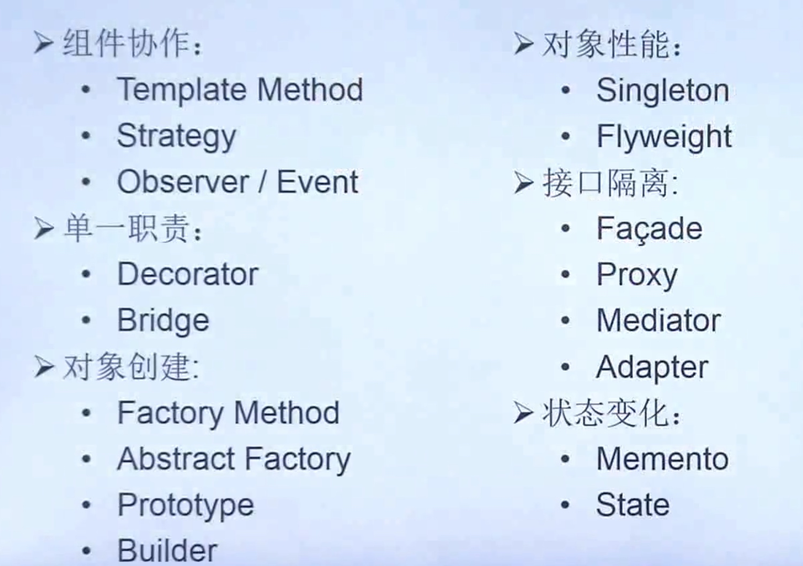

分类
- 创建类
- 结构型
- 行为型
- 

- 需求的频繁变化
- 没有一部到位的设计模式
- 重构 改善既有的模式
- 重构与模式
重构关键技法

组件协作模式
cpp_demo
class OperateSystem
{
protected:
virtual void TriggerInterrupt() = 0; //触发中断
virtual void SaveContext() = 0; //保存现场
virtual void InterruptSoulation() = 0; //中断处理
virtual void ReturnContext() = 0; //返回现场
public:
virtual void HandleInterrupt()
{
this->TriggerInterrupt();
this->SaveContext();
this->InterruptSoulation();
this->ReturnContext();
}
};
class Windows:public OperateSystem
{
private:
virtual void TriggerInterrupt() //触发中断
{
std::cout<<"Windows trriger\n";
}
virtual void SaveContext() //保存现场
{
std::cout<<"Windows save context\n";
}
virtual void InterruptSoulation() //中断处理
{
std::cout<<"Windows interrupt soulation\n";
}
virtual void ReturnContext() //返回现场
{
std::cout<<"Windows return context\n";
}
};
class Linux:public OperateSystem
{
private:
virtual void TriggerInterrupt() //触发中断
{
std::cout<<"Linux trriger\n";
}
virtual void SaveContext() //保存现场
{
std::cout<<"Linux save context\n";
}
virtual void InterruptSoulation() //中断处理
{
std::cout<<"Linux interrupt soulation\n";
}
virtual void ReturnContext() //返回现场
{
std::cout<<"Linux return context\n";
}
};
int main()
{
Linux *linux = new Linux();
Windows *window = new Windows();
linux->HandleInterrupt();
window->HandleInterrupt();
}
golang_demo
package Templatemethod
import "fmt"
type Downloader interface {
Download(uri string)
}
type Template struct {
Implement
uri string
}
type Implement interface {
download()
save()
}
func newTemplate(impl Implement) *Template {
return &Template{
Implement: impl,
}
}
func (t *Template) Download(uri string) {
t.uri = uri
fmt.Print("prepare downloading\n")
t.Implement.download()
t.Implement.save()
fmt.Print("finish downloading\n")
}
func (t *Template) save() {
fmt.Print("default save\n")
}
type HTTPDownloader struct {
*Template
}
func NewHTTPDownloader() Downloader {
downloader := &HTTPDownloader{}
Template := newTemplate(downloader)
downloader.Template = Template
return downloader
}
func (d *HTTPDownloader) download() {
fmt.Printf("download %s via http\n", d.uri)
}
func (*HTTPDownloader) save() {
fmt.Printf("http save\n")
}
type FTPDownloader struct {
*Template
}
func NewFTPDownloader() Downloader {
downloader := &FTPDownloader{}
Template := newTemplate(downloader)
downloader.Template = Template
return downloader
}
func (d *FTPDownloader) download() {
fmt.Printf("download %s via ftp\n", d.uri)
}
package templatemethod
func ExampleHTTPDownloader() {
var downloader Downloader = NewHTTPDownloader()
downloader.Download("http://example.com/abc.zip")
}
func ExampleFTPDownloader() {
var downloader Downloader = NewFTPDownloader()
downloader.Download("ftp://example.com/abc.zip")
}